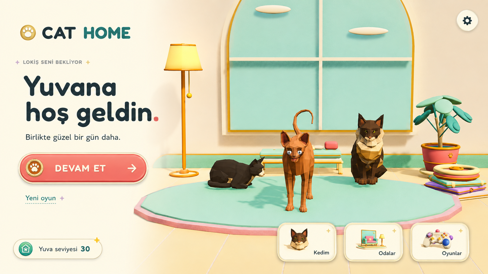
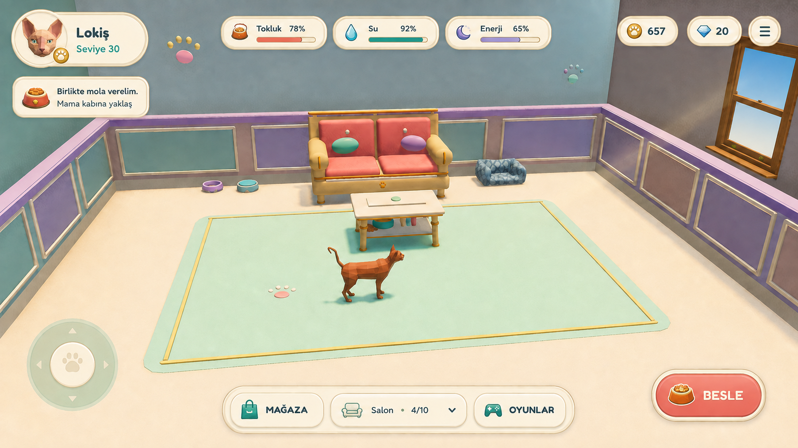
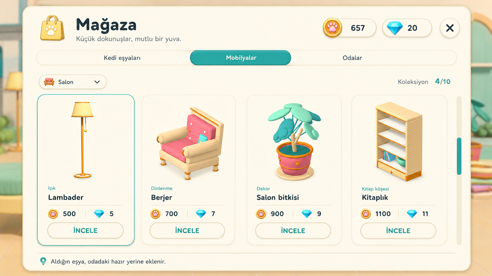
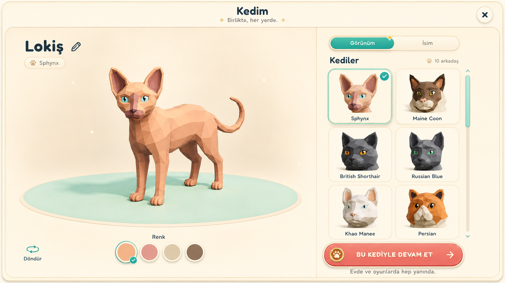
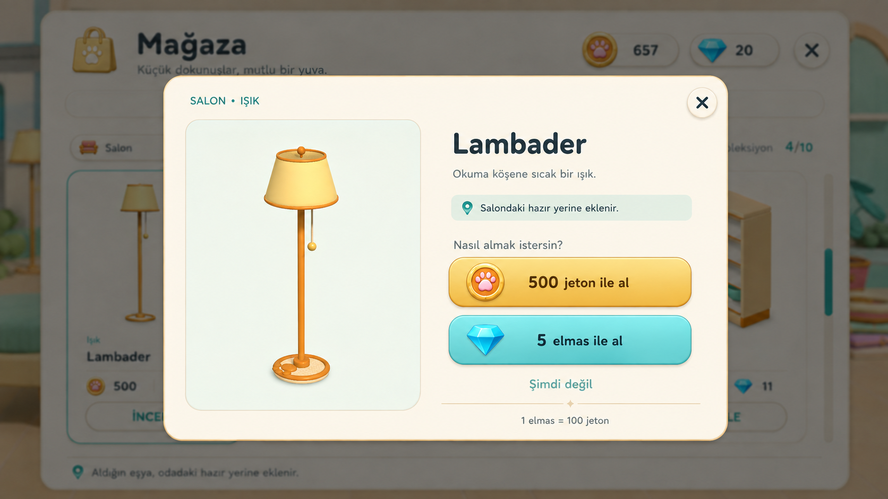
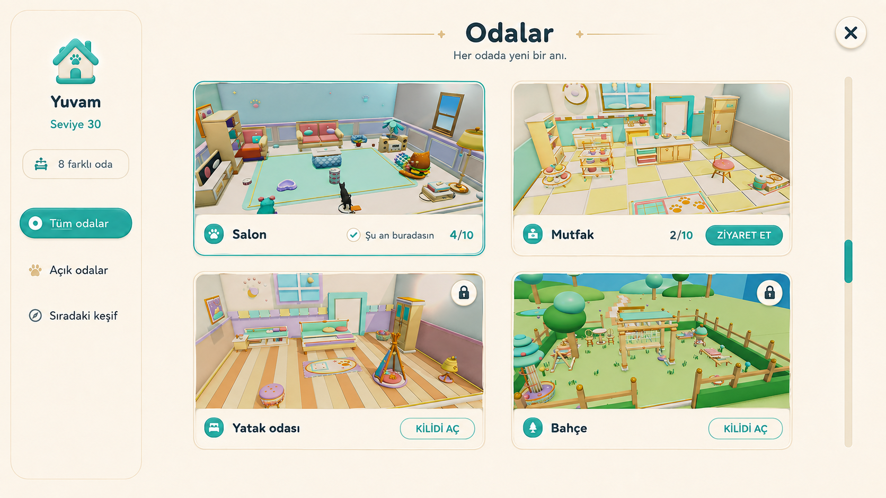

Cat Home / Görsel yön / 06.09.2026
Mevcut kedilerimiz ve eşyalarımızla, sıcak ve modern bir oyun arayüzü için altı referans. Daha sakin yüzeyler, belirgin ana eylemler, büyük ürün görselleri ve tutarlı karakter sunumu.
Bu görseller mevcut proje varlıkları referansıyla üretilen taslaklardır; oyun henüz bu görünüme geçirilmedi. Uygulamada mevcut 3D modeller ve kanonik ikonlar doğrudan kullanılacak. Sayılar ve kilit durumları örnektir.
01 / Ana menü

GörünümKediler için geniş sahne, küçük logo ve yardımcı yollar; Devam et düğmesi açıkça öne çıkıyor.
EtkileşimMevcut kedi animasyonlarıyla sakin baş ve kuyruk hareketi; arayüzde kısa basılma tepkisi.
02 / Ev ekranı

GörünümKompakt ihtiyaçlar, okunur bakiye ve bağlama göre bakım düğmesi; merkez kediye ve hareket alanına ayrılıyor.
EtkileşimYakındaki eşyaya göre eylem görünür; bakım sonrasında ihtiyaç çubuğu kısa bir geri bildirim verir.
03 / Mağaza

GörünümMevcut lambader, berjer, bitki ve kitaplık büyük kartlarda. Kategori ve iki para seçeneği taranabilir.
EtkileşimSeçim ince bir vurgu alır; ürün ayrıntısı aynı görsel üzerinden açılır.
04 / Kedim

GörünümBüyük kedi önizlemesi, okunur ırk seçimi, renk ve isim erişimi tek tasarım ailesinde.
EtkileşimModel döndürülür, seçim önizlenir; ev ve mini oyunlara aynı kedi taşınır.
05 / Satın alma

GörünümMevcut ürün büyük; jeton ve elmas iki belirgin seçenek. Sabit yere eklenme bilgisi kısa ve görünür.
EtkileşimOnaydan sonra eşya tasarlanmış yerine eklenir; kısa ve sakin başarı geri bildirimi verilir.
06 / Odalar

GörünümGerçek odalar temel içerik. Mevcut, ziyaret edilebilir ve kilitli durumlar farklı görünüyor.
EtkileşimZiyaret ve satın alma yolları net ayrılır. Oda fotoğrafları uygulamada kesin 16:9 oranını korur.